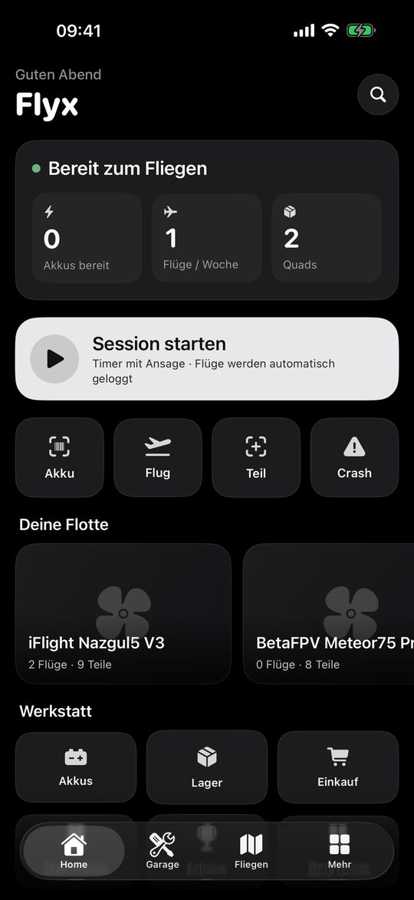
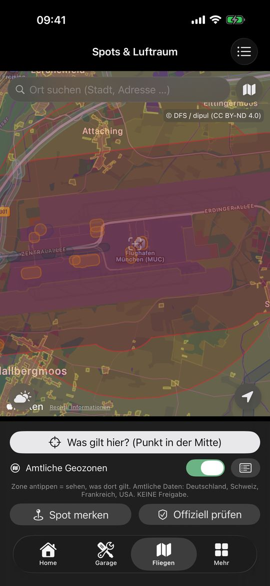
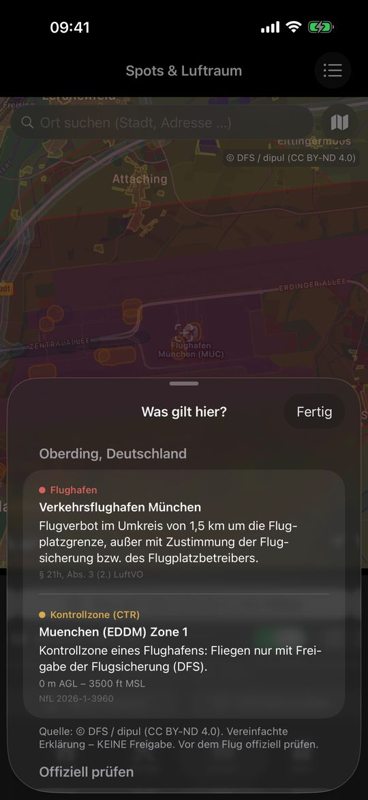
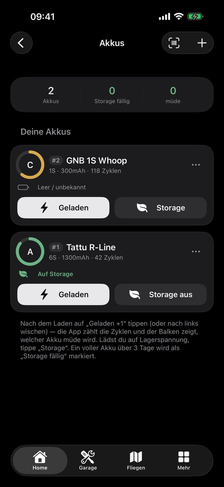

Apps for FPV and drone pilots
Fly more.
Search less.
Flyx does two things well: keeping your gear and flying spots sorted, and cutting your clips into a finished video. Right on your iPhone.
Flyx Map Free
Your FPV garage with a flight map: quads, parts and batteries sorted, official geo zones at a glance, and see who in your crew is flying today.




Garage
Add quads with every installed part, from a template, barcode or photo. Part broken? See instantly what was installed and whether a spare is in stock.
Batteries
Count charge cycles, keep an eye on battery health and get a reminder when a full LiPo has been sitting too long.
Flight map & geo zones
Official geo zones for Germany, Switzerland, France and the USA. Tap a spot to see in plain words what applies there.
Session
Timer with voice announcements: goggles on, phone in your pocket. Flights are logged automatically with battery and duration.
Crew
Join friends with a code: who's flying today, share builds and spots.
And more
Maintenance, flight log, document wallet, statistics, widget, Siri shortcuts and backup to your iCloud Drive.
The flight map and geo zones are information aids, not an official clearance. Always check the official sources before flying.
Flyx Cut In testing
Clips in, finished video out. Flyx Cut edits your FPV and action-cam footage to the beat automatically, fully offline on your iPhone. Coming to the App Store soon.
Automatic edit
Modes for freestyle, cinematic, crash and bike/ski. The automatic edit makes suggestions, you decide.
Your subject in frame
Mark what matters and Flyx Cut keeps it whole and centred in every scene.
Looks & colour
Seven looks including D-Log conversion, colour matching between clips and look comparison.
Stabilisation & horizon
Gyro stabilisation for GoPro HERO5 and newer, plus horizon levelling.
Music & effects
Built-in tracks or your own songs cut to the beat, speed ramps, crash replay and flight stats in the end credits.
Full quality
Export at original resolution and frame rate up to 4K, no length limit, ready for Instagram.
Support
Questions, bugs, wishes or deletion requests? Just send me an email, I answer personally.
In Flyx Map you can also write from the app under More → Feedback & Wishes.